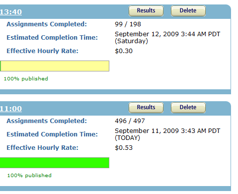

It was 125 years ago this week that the International Meridian Conference was held to finally select a prime meridian. Whom ever won the title became the zero point from which all others were counted. Now, the UK had been using its own Greenwich meridian for decades, and in turn many other countries followed. Just goes to show you that first to market sometimes beats the “best” choice purely on convenience of market saturation. Of the 41 attendees to the conference they represented 25 countries and the choice was made to go with Greenwich Mean Time.
In 01884, Greenwich Mean Time (GMT) was officially adopted at the International Meridian Conference as the official prime meridian. It was names after Greenwich, London where the Royal Observatory was based. It is called Greenwich “Mean” time because it is an arbitrary placement of the time within each time zone. Noon from where you are standing does not always correlate to the sun being directly overhead, hence the term “mean” or average placement for that particular time zone.
Having a standardized time was important for many reasons, but particularly for navigational purposes. As the British Empire was growing around the world, the sailors needed to be able to determine where they were and how far they had travelled. To do this, they used a marine chronometer. This would measure the time at a fixed point in Greenwich and compare that to their current location’s time and compute the difference. In doing so, they could determine distance east or west travelled giving them a longitudinal reference for navigation. The majority of the world’s shipping and sea charts were already based on GMT, so rather than switch to a costly new system most delegates realized it was best to simply go with what they knew and were using already.
At the time Britain was the world naval power, so everyone copied them, or it was enforced upon them as British world trade increased. Pretty soon the chronometer became so cheap to produce and purchase that all new ships were fitted with one and they all pointed to GMT as their fixed reference point.
After the adoption of a regulated reference point, each country needed to know their offset from GMT. This is where we get the creation of time zones which are +/- hours from Greenwich, London.
As we move away from naval powers governed by countries to global tech companies finding niches in new territories and sectors, the balance of power is shifting. The technology of their time referenced GMT, but now the technology of our is beginning to reference something else.
With Google, Apple, Microsoft and so many other web companies being based along the West Coast of the United States, they set their schedules to their own local time. As more and more of these high-tech companies are running applications and clean-up routines at midnight their local time, the rest of the world slowly gets insync with them. PST is becoming the new GMT, much like the marieners of old, could this is the new point of reference for Internet?
Pacific Standard Time (PST) is 8 hours behind GMT when not on daylight savings. This means that at 21:00 GMT it is 13:00 PST. Everyone knows their offset from GMT, it’s their time zone.
Recently, companies have been quoting to a world-wide audience event times in PST. This creates a two step process. First, convert PST to GMT, then GMT to local time. Had they quoted the event in GMT everyone would only need to make 1 adjustment. Introducing more conversions, introduces more chance for error. The US changed when their daylight savings begins and ends. For some months they are in sync with GMT, some months they adjust by one hour, but then only some of that time Britain enters into British Summer Time (BST), so computing the correct time weeks or months ahead introduces plenty of room for confusion and error.
Awhile ago I was experimenting the Amazon’s Mechanical Turk. They quote the estimated completion time in their local time, PDT (Pacific Daylight Time). This is PST during daylight saving. Now, I need to convert between PDT, which is PST +1 to GMT. Why not just quote things in GMT? I guess if the majority of their customers are west-coast then it would make sense, but on the web where there are no boundaries. If you are going to have an arbitrary timezone, why not make it GMT? In a strange follow-up, I received an email from Amazon about a Mechanical Turk online seminar. Again, it was quoted in PDT. This might be handy for the presenter to know when to start, but for the rest of the world, we need to do the calculations.
Internet Time
Swatch tried to introduce a concept called “Swatch Internet time“. While an interesting and novel idea to unify the world, it sadly never caught on. Instead of having local clocks and local time, the ideas is to have only one universal metric clock. In Internet Time, if it is @800 in London, it would also be @800 in Tokyo. The means that we don’t all each Lunch at noon in our local time, but instead Londoners each lunch at @450 and folks in Switzerland at @500. A day in Internet Time is 1000 ‘beats’, which is represented by the @ sign. It is interesting, but from a scientific point of view, it missed the boat on many aspects making it more of a marketing gimmick than a useful unit of measurement. Instead or reusing the Greenwich meridian it uses the Swatch headquarters in Biel, Switzerland as the new meridian, which is slightly a skew from +0100 GMT. Also the internationally recognized unit of time, the second, is not used in the Internet Time standard, it is replaced with the ‘beat’ which is the smallest unit and corresponds to 1 minute and 26.4 seconds.
The same effect is gained if we all quoted our times in UTC realizing that people in New York would typically eat lunch at 16:00 UTC and people in Seattle would eat lunch at 20:00 UTC. Scheduling a meeting for 13:00 UTC everyone knows this as a disambiguous time.
PST spotting
As GMT reaches the ripe old age of 125, has its time past? We’ll certainly never get ride of GMT or the time zones, but as that central point of reference, its being over-shadowed by PST. Look for yourself and I bet you that you’ll find many more events quoted in PST than GMT, from scheduled Twitter downtimes, to Apple keynote events, the world is forced into their small sliver of the globe.
Will this trend continue? I don’t know. Maybe the more important questions is, has this happened before? Will China, with its single massive time zone, rear its head and take the position from which everything is coordinated? Only time will tell.